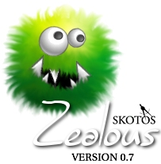

060406 - New SKOOT protocol support.
0.8
090606 - Disabled scrollback-buffer as it may be the
cause for experienced lag among players
100606 - WOE now loads objects with spaces correctly
200506 - WOE now does keepalive for the routered
folks
200506 - WOE now reloads items reselected properly
v0.7.5
170206 - WOE reload-same-page-when-browsing fixed 270106 - System beep toggle on incoming page 270106 - Toggle for blinking title alert 260106 - Addedv0.7.4tag support 200106 - Added tag support 190106 - Ability to define fixed font style 180106 - Added macro support in preferences 180106 - Added total skin support to prefs support includes left, right sidebars, left and right logos and both Getting Started and Mastering Chat buttons.
160106 - Added Buffer Toggle to Options Menu
160106 - Added Clear Scrollback Option
160106 - Added ability to define fixed font size
160106 - Removed all enablePrivilege calls
as these are redundant in extensions
160106 - Improved Woe interface to include
gamelink frame
160106 - Added Zelly to skin, appears on
your extensions page now.
160106 - Added option to delete background
160106 - Added list of backgrounds you've used
160106 - Changed menu options, names, etc
160106 - Fixed background bug that wouldn't
revert background if you didn't have
one set
150106 - Added Woe interface
140106 - Fixed onMainLoad repeat issue
v0.7.3
130106 - Added tab completion from mudzilla
130106 - Added menu option to change background
130106 - Added hotkeys to menus
130106 - Added zealotry protocol
130106 - Changed Zealous to Zealotry and made
it an XPI that no longer requires certs
to use.
120106 - Added groundwork for changeable background
images. Need to add a way to set them.
120106 - Added image by Age to changelog and
to zealousabout files.
110106 - Various minor bug fixes, undeclared
variables, etc.
110106 - Changed Load Config to prompt for config
file if one is not located in your home
folder. Only prompts on Load Config, not
when you first start Zealous. That would
be to annoying as it would always prompt
if you didn't have a home folder set or
if the file was missing.
110106 - Added Dictionary lookup support, accesskey F2,
using dictionary.net dictionary service.
110106 - Added Menu item Help and suboptions
110106 - Added zealousabout.txt
110106 - Added changelog.txt
110106 - Fixed issue with scrollback not starting at end
but rather one half screen up
110106 - Added functionality to open various windows for
Help menu options
100106 - Support added for secondary scrollback buffer
100106 - Fixed issue with preferences not saving Echo
toggle
100106 - Fixed issue with Echo preference not being
restored at startup
v0.6
?????? - Added Autolog support
?????? - Added logging support
?????? - Added font and size support
?????? - Fixed memory leak issues
?????? - Added macro support
?????? - Added config file support